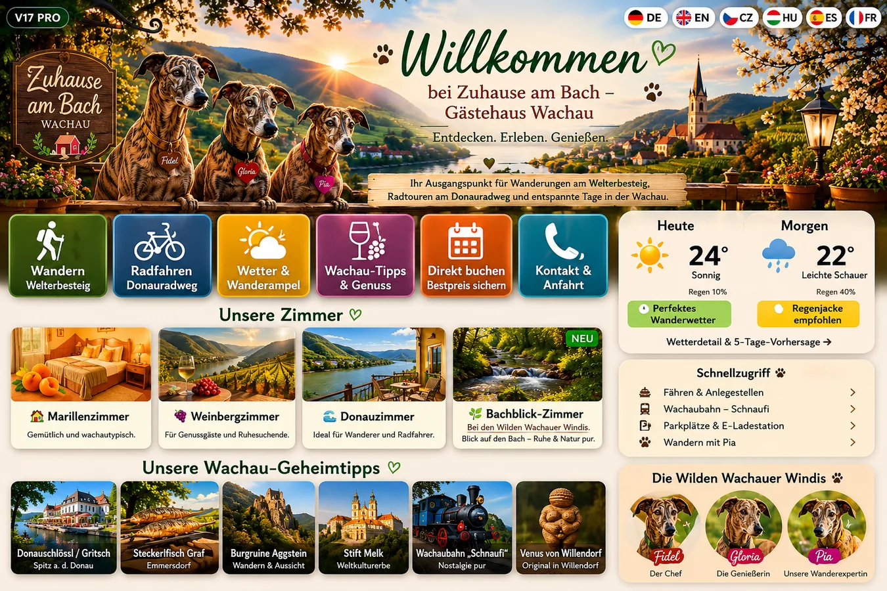

Fidel
Der ruhige Beschützer und Denker. Seine Welt: Eisenbahn, Technik, Sicherheit und Abenteuer mit Köpfchen.
Fidel, Gloria und Pia sind mehr als drei Windhunde. Sie entdecken Burgen, Wege, Marillen, Bahnabenteuer und kleine Geheimnisse – dort, wo ihre Geschichten zuhause sind: in der Wachau.
Jeder Windi hat seinen eigenen Blick auf die Welt. Gemeinsam machen sie aus Orten Geschichten und aus einer Reise eine Erinnerung.
Der ruhige Beschützer und Denker. Seine Welt: Eisenbahn, Technik, Sicherheit und Abenteuer mit Köpfchen.
Die Genießerin und verbindende Seele. Ihre Welt: Wachauer Marillen, regionale Küche, Gastfreundschaft und Tradition.
Klein, schnell, neugierig und mutig. Ihre Welt: Geheimnisse, Entdeckungen, überraschende Wege und die Frage: Was steckt wohl dahinter?
In Aggsbach Markt liegt „Zuhause am Bach“ – Unterkunft für Wanderer und Radfahrer und zugleich das reale Zuhause der Wilden Wachauer Windis. Gäste können die Wachau von hier aus entdecken und Teil der fortlaufenden Windi-Chronik werden.
Das Prinzip: lesen → entdecken → übernachten → erleben → Erinnerung mitnehmen.
Zuhause am Bach entdecken
Die Marke verbindet Geschichten, echte Orte und kleine Erlebnisse in der Wachau.
Abenteuer der Windis in Aggsbach Markt, Dürnstein, Spitz, Melk und weiteren Orten.
Welterbesteig, regionale Sagen, Burgen, Natur und kleine Geheimtipps aus Sicht der Windis.
Ein echter Etappenstopp mit sicherer Fahrradgarage, E‑Bike-Lademöglichkeit und Geschichten für unterwegs.
Gäste werden nicht nur Besucher: Erlebnisse und Erinnerungen können Teil der fortlaufenden Chronik werden.
Wachauer Genuss, einfache Rezepte und regionale Tradition mit einer eigenen Erzählerin.
Technik, Gleise und Eisenbahngeschichten als eigener Themenstrang innerhalb der Serie.
Geheimnisse, versteckte Plätze und kleine Abenteuer, die Familien und Gäste selbst weiterentdecken können.
Der reale Ankerpunkt des Windi-Universums in Aggsbach Markt – nicht Kulisse, sondern Teil der Geschichte.
„Wir vermieten kein Zimmer. Wir öffnen die Tür zu einer Erinnerung, einer Geschichte und einem Stück Wachau.“
Die Wilden Wachauer Windis verbinden Buchwelt und echten Ort. Genau diese Verbindung macht die Marke unverwechselbar.